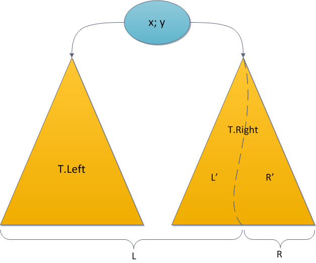

Декартово дерево
Декартово дерево — это двоичное дерево, в узлах которого хранятся: ссылки на правое и левое поддерево, ссылка на родительский узел (необязательно), ключи x и y, которые являются двоичным деревом поиска по ключу x и двоичной кучей по ключу y. А именно, для любого узла дерева n ключи x узлов правого (левого) поддерева больше (меньше либо равны) ключа x узла n, ключи y узлов правого и левого детей больше либо равны ключу y узла n.
Ссылка на родительский узел не обязательна, она желательна только для линейного алгоритма построения дерева.
Декартово дерево - это структура данных, объединяющая в себе бинарное дерево поиска и бинарную кучу (отсюда и второе её название: treap (tree+heap) и дерамида (дерево+пирамида).

type
Treap = ^TNode;
TNode = record
x,y : Integer; { x - ключ, y - приоритет (произвольные сравнимые типы данных) }
Left,Right : Treap; { Левое и правое поддерево }
end;
Merge (склеивание)


{ Слияние декартовых деревьев }
function Merge( L,R : Treap ):Treap;
begin
if L = nil then { Левого поддерева нет }
Result := R { => результат - правое поддерево }
else if R = nil then { Правого поддерева нет }
Result := L { => результат - левое поддерево }
else if L.y > R.y then begin { У левого приоритет выше }
{ => левое становится корнем }
{ Левое поддерево у него сохраняется }
L.Right := Merge(L.Right,R);
Result := L;
end else begin { У правого приоритет выше или равен }
{ Правое поддерево сохраняется }
{ Левое поддерево = результат слияния левого с
левым сыном правого поддерева }
R.Left := Merge(L,R.Left);
Result := R;
end;
end;
Split (разрезание)


{ Операция разрезания дерева T по ключу x на 2 поддерева L и R }
procedure Split( T:Treap; x:Integer; var L,R:Treap);
var Temp : Treap; { Временное дерево }
begin
Temp := nil;
if T = nil then begin { Если дерево пустое }
L := nil; { то результат разрезания пустой }
R := nil;
end else
if T.x <= x then begin
if T.Right = nil then
R := nil
else
Split(T.Right,x,Temp,R);
L := T;
L.Right := Temp;
end else begin
if T.Left = nil then
L := nil
else
Split(T.Left,x,L,Temp);
R := T;
R.Left := Temp;
end;
end;
Добавление новой вершины

{ Добавление вершины с ключём x в дерево T }
procedure Add( var T:Treap; x:integer );
var NV,L,R : Treap;
begin
new(NV); { Создаём новый узел }
NV.x := x; { У него ключ x }
NV.y := Random(High(Integer)); { И случайный приоритет }
NV.Left := nil; { Нет поддеревьев }
NV.Right := nil;
Split(T,x,L,R); { Разрезаем исходное дерево по ключу x }
{ Склеиваем 3 получившихся дерева }
T := Merge(Merge(L,NV),R);
end;
Удаление вершины с заданным ключом x

{ Удаление вершины }
procedure Delete( var T:Treap; x:integer );
var L,R,M,Rs : Treap;
begin
Split(T,x-1,L,R);
Split(R,x,M,Rs);
{ Удаляем одну верхнюю вершину в M }
if M <> nil then begin
if M.Left = nil then
M := M.Right
else
M := M.Left;
end;
{ Сливаем вместе оставшиеся куски }
T := Merge(L,Merge(M,Rs));
end;
Поиск минимума и максимума
{ Поиск минимума в дереве }
function MinT( T:Treap ):integer;
begin
if T = nil then { Если дерево пустое, то минимума нет }
MinT := High(integer)
else if T.Left = nil then { Левого поддерева нет => текущий элемент - минимум }
MinT := T.x
else
MinT := MinT(T.Left); { Минимум в левом поддереве }
end;
{ Поиск максимума в дереве - аналогично минимуму, только идём вправо }
function MaxT( T:Treap ):integer;
begin
if T = nil then
MaxT := Low(Integer)
else if T.Right = nil then
MaxT := T.x
else
MaxT := MaxT(T.Right);
end;
Поиск значения в дереве
{ Поиск значения в дереве }
function Find( T:Treap; x:integer ):boolean;
begin
if T = nil then
Find := false { Не найдено }
else if T.x = x then begin
Find := true; { x найдено в текущей вершине }
end else if x < T.x then
Find := Find(T.Left,x) { Поищем слева }
else
Find := Find(T.Right,x); { Поищем справа }
end;
Вычисление высоты дерева
{ Высота дерева }
function Height( T:Treap ):integer;
begin
if T = nil then
Result := 0
else
Result := max(Height(T.Left),Height(T.Right))+1;
end;
Тестирование всех операций
var
T : Treap = nil;
i,j : Integer;
begin
Randomize;
{ Проверяем что сейчас ничего в дереве нет }
for i := -10 to 10 do
assert( not Find(T,i) );
{ Добавляем вершины }
for i := 1 to 1000000 do begin
Add(T,i);
assert( not Find(T,-1) ); { Вершины -1 по-прежнему нет }
for j := 1 to min(10,i) do { Добавленные вершины есть }
assert( Find(T,j) );
assert( not Find(T,i+1) ); { Вершин с большим номером нет }
end;
Writeln('Высота дерева (оценка: 4*log(N)): ',Height(T));
assert( Find(T,10) );
Delete(T,10);
assert( not Find(T,10) );
end.
Решение задачи поиска чисел в массиве
var
T : Treap = nil;
N,M,x,i : Integer;
begin
Reset(Input,'find.in');
Rewrite(Output,'find.out');
Randomize;
Read(N,M);
for i := 1 to N do begin
Read(x);
Add(T,x);
end;
for i := 1 to M do begin
Read(x);
if Find(T,x) then
Writeln('YES')
else
Writeln('NO');
end;
end.